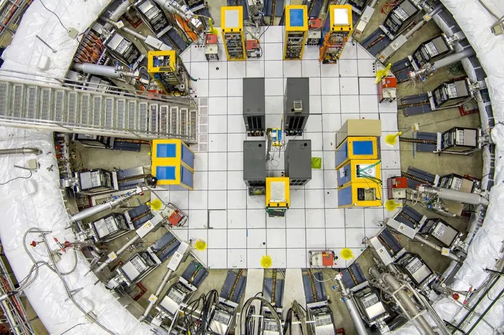
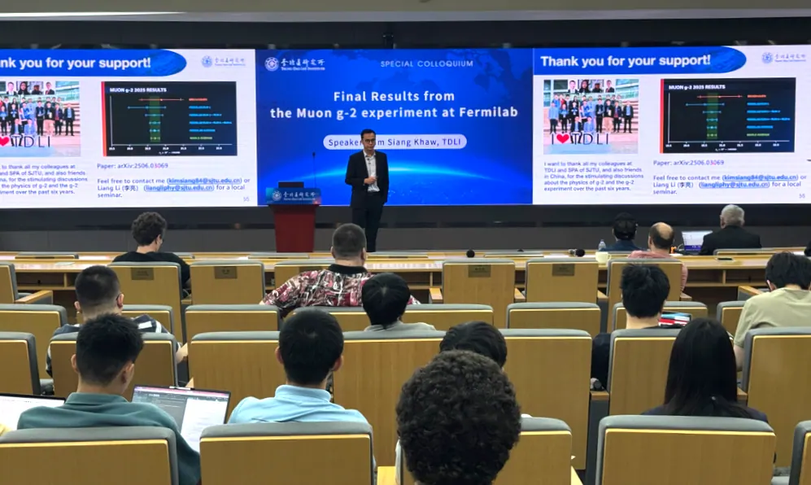
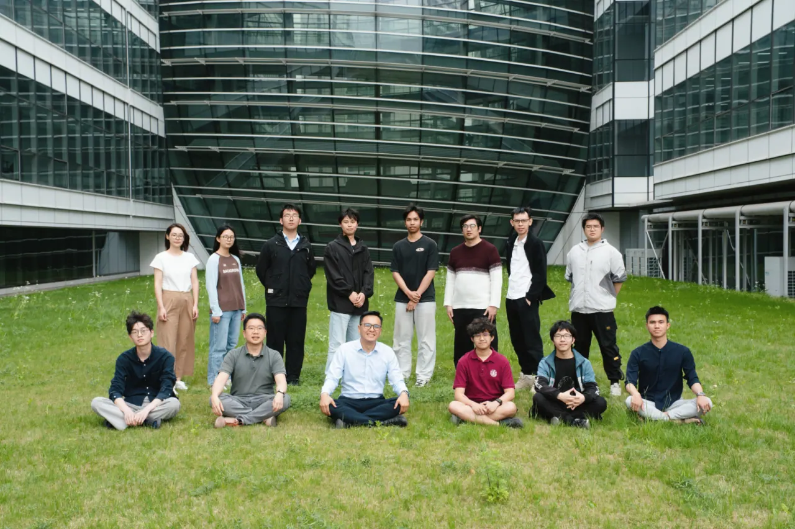

The Fermilab Muon g-2 experiment announced its final results at 11:00 PM Beijing time on June 3. The new measurement agrees closely with the results published in 2021 and 2023 and reaches an unprecedented precision of 127 parts per billion (ppb), surpassing the original goal of 140 ppb. It is the most precise measurement of the muon anomalous magnetic moment to date. Although recent theoretical calculations have weakened the hints of new physics in the muon g-2, the high-precision experimental result still places strong constraints on extensions of the Standard Model. The Shanghai Jiao Tong University team played a key role in measuring the muon spin precession frequency and the associated beam dynamics corrections. Within our group at TDLI, PhD student Yonghao Zeng performed an independent analysis of the anomalous precession frequency, using Gaussian Process Regression to model beam dynamics effects. Postdoctoral researchers Siew Yan Hoh and Yusuke Takeuchi contributed to the beam dynamics corrections, including the pitch and differential decay corrections. The result has been published in Physical Review Letters 135, 101802 (2025) and is also available on arXiv: https://arxiv.org/abs/2506.03069.


Kim Siang Khaw presented the final results at a special colloquium titled “Final Results from the Fermilab Muon g-2 Experiment.” He noted that the Standard Model of particle physics still leaves many open questions. Experimentalists use three main approaches—direct detection, direct production, and indirect measurement—to search for unknown fundamental particles and forces. The precise measurement of the muon anomalous magnetic moment is an example of an indirect measurement. By improving experimental precision, researchers can test the contributions of the different Standard Model interactions to the muon g-2. Any mismatch between theory and experiment may point to new physics beyond the Standard Model.


The Fermilab Muon g-2 experiment was proposed in 2008, approved in 2012, and completed setup and trial runs in 2017. From 2018 to 2023, it recorded about 100 billion muon decay events. The measurement involves three main steps: (1) injecting a polarized muon beam into a superconducting storage ring, (2) measuring the magnetic field in the muon storage region, and (3) determining the muon spin precession frequency. In addition to improved magnetic field and spin precession measurements, a radio-frequency electrostatic quadrupole system was used during Run-5, greatly reducing coherent beam oscillation amplitudes and lowering the systematic bias by a factor of 10. At 11:40 PM on May 20, 2025, more than a hundred collaboration members witnessed the unblinding of the analysis. The final measurement confirmed the 2021 and 2023 results and achieved a record precision of 127 ppb, a value likely to become a widely cited benchmark in the field.


北京时间6月3日晚11点，美国费米国家加速器实验室（Fermilab）缪子 g-2 实验发布最终结果。新测量结果与2021年和2023年发表的结果高度吻合，精度达到前所未有的127 ppb（十亿分之一），超越了140 ppb的原定目标，是迄今为止对缪子反常磁矩最精确的测量。尽管近期的理论计算削弱了缪子 g-2 中新物理的迹象，但这一高精度实验结果仍对标准模型的各类扩展理论构成了强有力的约束。上海交通大学团队在缪子自旋进动频率测量及相关束流动力学修正中发挥了关键作用。在李政道研究所课题组内，博士研究生曾永浩利用高斯过程回归对束流动力学效应进行建模，独立完成了反常进动频率分析；博士后 何守仁 和竹内佑甫参与了束流动力学修正工作，包括俯仰（pitch）修正和微分衰变修正。该结果已发表于Physical Review Letters 135, 101802 (2025)，预印本见 arXiv：https://arxiv.org/abs/2506.03069。
许金祥在题为“费米实验室缪子 g-2 实验最终结果”的特别学术报告中介绍了这一成果。他指出，粒子物理标准模型仍有许多悬而未决的问题。实验物理学家主要通过直接探测、直接产生和间接测量三种途径寻找未知的基本粒子和相互作用，而缪子反常磁矩的精密测量正是间接测量的典型例子。通过不断提高实验精度，研究人员能够检验标准模型中各种相互作用对缪子 g-2 的贡献；理论与实验之间的任何偏差都可能预示着超越标准模型的新物理。
费米实验室缪子 g-2 实验于2008年提出，2012年获批，2017年完成建设和试运行。2018年至2023年间，实验共记录了约1000亿个缪子衰变事例。测量主要包括三个步骤：（1）将极化缪子束流注入超导储存环；（2）测量缪子储存区域的磁场；（3）测定缪子自旋进动频率。除磁场和自旋进动测量的改进外，Run-5 期间还采用了射频静电四极系统，大幅降低了相干束流振荡幅度，使系统偏差减小了一个数量级。2025年5月20日晚11点40分，一百多位合作组成员共同见证了数据分析的揭盲。最终测量结果证实了2021年和2023年的结果，并达到127 ppb的创纪录精度，有望成为该领域被广泛引用的基准值。